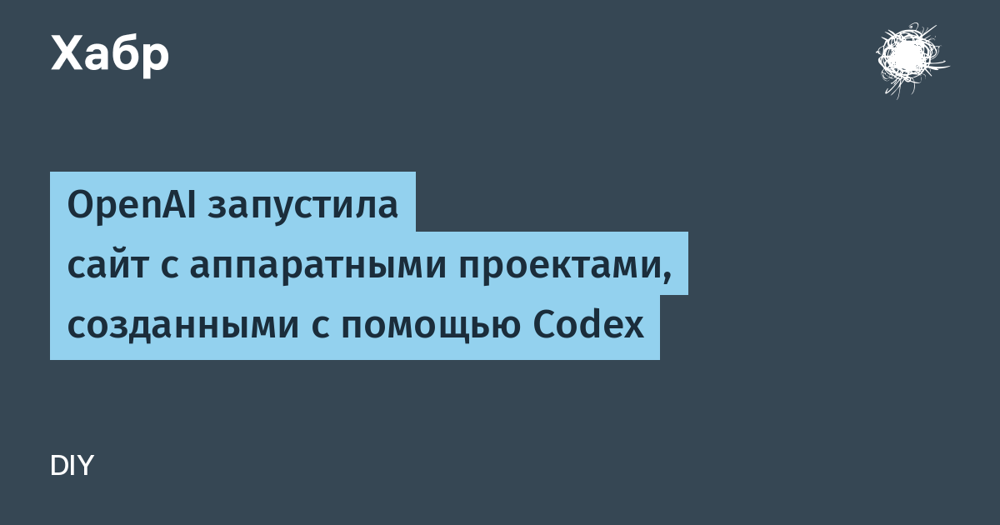

OpenAI запустила сайт «You can just build things (with hardware)» — каталог из 20 аппаратных проектов, которые сообщество собрало с помощью агента Codex. Для каждого проекта есть инструкции, ссылки на репозитории авторов и объяснение, как повторяющему работать с Codex. Голосовать и присылать свои разработки можно после входа через аккаунт ChatGPT.
Самый говорящийся пример — старая читалка Kindle: автор с помощью Codex написал для неё джейлбрейк и превратил в экран мониторинга расхода токенов в ChatGPT, Codex и Claude Code — каждые шесть часов устройство просыпается, сверяет статистику и обновляет картинку. Рядом — беспроводная кнопка спуска затвора для камер Ricoh GR II–IV на мини-контроллере M5Stack StickS3 с экраном-видоискателем, и гусеничный робот с манипулятором, который собирает разбросанный мусор в собственную корзину.
На сайте есть и работы команды OpenAI: камера ImageGenCam на Raspberry Pi, стилизующая снимки по текстовому промпту, и ассистент Reflect на контроллере M5Stack CoreS3. Сам слоган не новый — под девизом «you can just build things» в июле продавали контроллер Codex Micro за $230; теперь бренд растянули на целое направление ручного DIY с ИИ-агентом в роли инженера-напарника.
Официально подтверждённого аналога — витрины аппаратных проектов при агенте для кода от российских ИИ-компаний — на момент публикации нет, так что просто констатируем: ниша свободна.